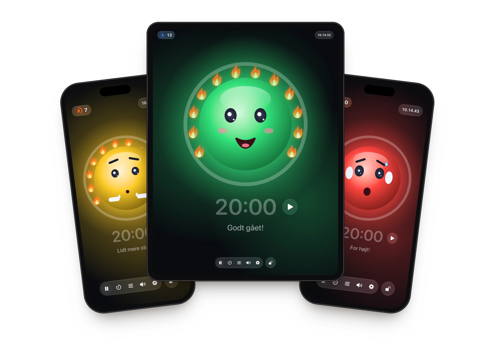
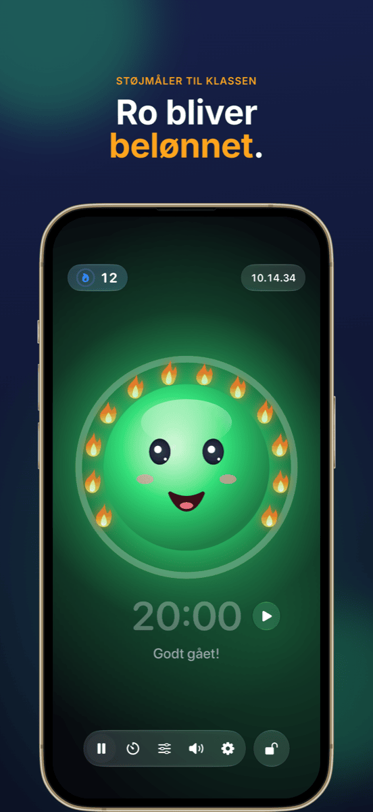
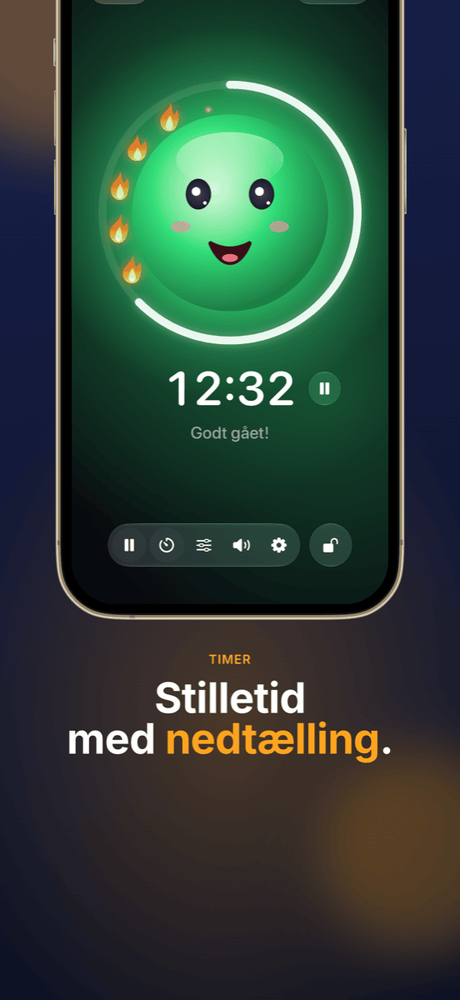
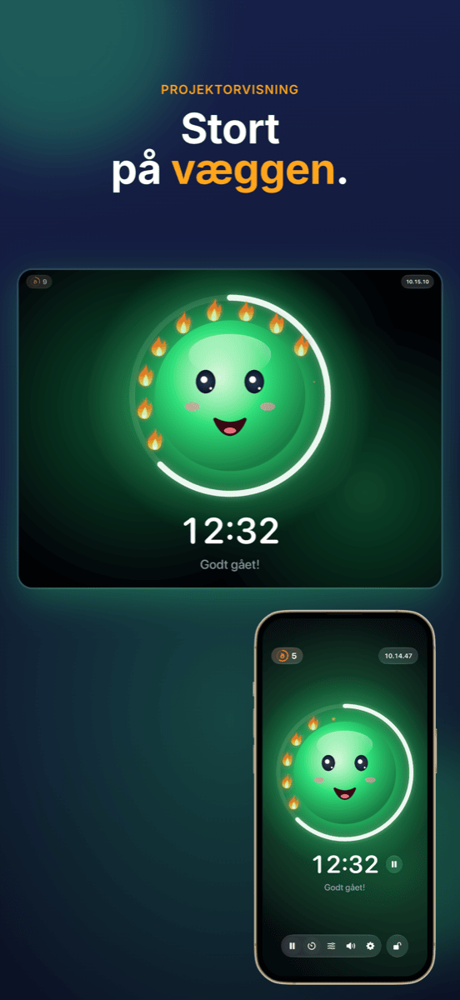
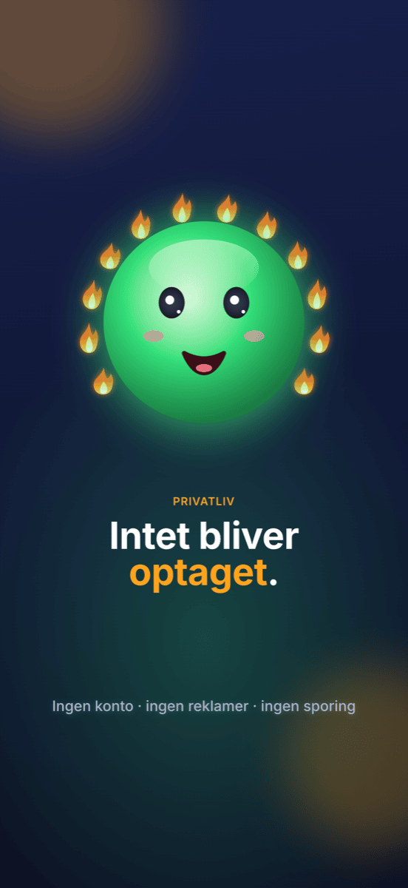

Ruhe
Det venlige støjlys til klasseværelset: stille arbejde giver flammer – larm bliver aldrig straffet.






Funktioner
Støjlys med maskot
Grøn, gul, rød – et glad ansigt viser, hvor højt der er. Ved gul siger det stille »shh«, ved rød holder det sig for ørerne.
Flammer i stedet for straf
Så længe der er ro, tændes den ene flamme efter den anden. Tolv flammer giver en fuld krans, og det bliver fejret. Bliver det for højt, går flammerne ud.
Timeren i syne
Ringen rundt om maskotten viser den resterende tid. Start og stop lige ved siden af tiden; når den løber ud, sættes målingen på pause.
Projektorvisning
På en projektor eller en ekstra skærm vises støjlyset i fuld skærm – betjeningen bliver på din iPad.
Passer til alle klasser
Med to skydere bestemmer du, hvornår gul og rød begynder – eller Ruhe lytter i 5 sekunder og kalibrerer sig selv.
Lås betjeningen
Låst med Face ID eller kode, så ingen i klassen ændrer noget.
Sådan virker det
Stil iPad’en op
Åbn Ruhe, og tryk på ansigtet – målingen starter.
Lad klassen arbejde
Maskotten viser klassen, hvor højt der er, og samler flammer for hver rolig periode.
Se succesen
Når timen slutter, er det det, der lykkedes, der tæller: flammekransen.
Guide
Hjælp & support
Ruhe måler ikke noget – hvad gør jeg?
Ruhe skal have adgang til mikrofonen. Tillad det i Indstillinger → Anonymitet og sikkerhed → Mikrofon → Ruhe.
Lyset skifter til rødt for tidligt eller for sent.
Tryk på skyder-symbolet i værktøjslinjen, og flyt grænserne for gul og rød – eller brug »Indstil automatisk«, mens klassen arbejder som normalt.
Hvordan viser jeg Ruhe på projektoren?
Forbind iPad’en med projektoren via kabel eller AirPlay. Ruhe viser automatisk støjlyset i fuld skærm dér, og betjeningen bliver på iPad’en.
Hvordan nulstiller jeg flammerne?
Tryk på flammetælleren øverst til venstre. Der kan du rette flammerne eller sætte dem alle til 0. Har Ruhe været i baggrunden i mere end 10 minutter, starter næste time alligevel på 0.
Bliver noget optaget?
Nej. Ruhe måler kun lydniveauet – intet bliver optaget, gemt eller sendt. Detaljerne står i privatlivspolitikken.
Er dit spørgsmål ikke med?
Skriv til info@crabucate.de – jeg svarer som regel inden for en dag eller to.
Ro, der føles godt.
Til iPad og iPhone – nu i App Store.